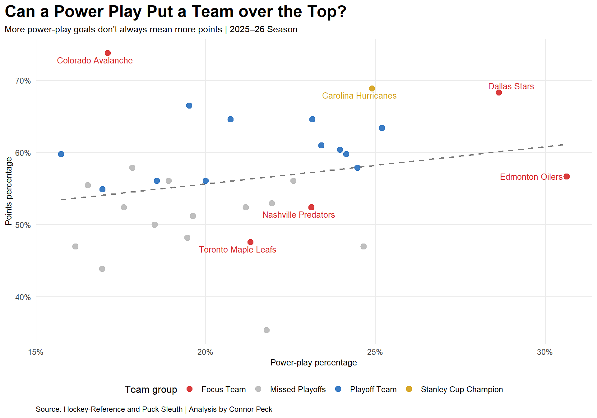
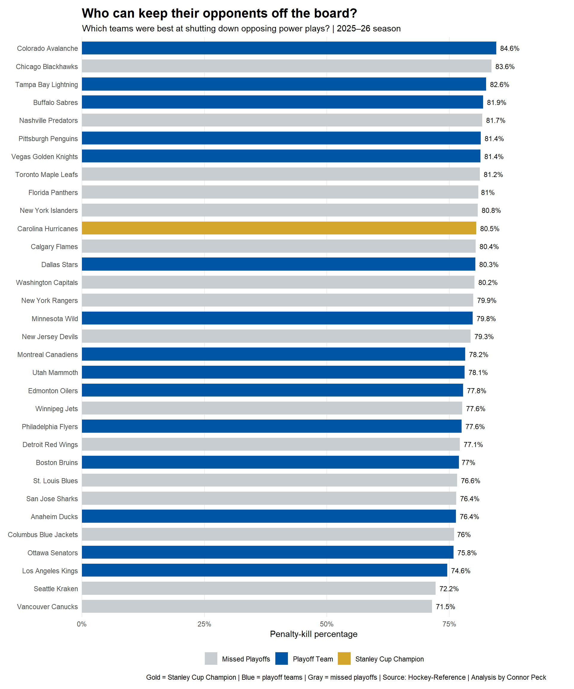

In hockey, a power play can change the game in seconds. A successful use of a man advantage creates scoring opportunities that may have not been possible at even strength, while a strong penalty kill can prevent opponents from taking advantage of those same situations.
But how much can special teams really accomplish over an entire season? Can an elite power play make up for a teams’ weakness in the 5 on 5, or does sustained success depend on how well teams perform when both sides have the same amount of skaters?
To explore these questions, I compared all 32 of the NHL teams’ power play percentages, penalty kill percentages, five-on-five expected goal shares, goal differentials, and points percentages from the 2025-26 season, supplied by Hockey Reference and Puck Sleuth. Five teams, the Edmonton Oilers, Colorado Avalanche, Dallas Stars, Nashville Predators, and the Toronto Maple Leafs provide particularly interesting contrasts in their game, and will be noted going forward.
A Power Play Can Help, but Does it Guarantee Success?
As one of the clearest ways to gain an advantage in the game of hockey, the power play gives teams more scoring opportunities then they would normally ever have in a five-on-five setting. But high conversion rates don’t necessarily always mean a successful season.
Comparing power play percentage with points helps to test whether teams that capitalize on a man advantage actually translate it into points (as in their season total, not game total) and wins. The particularly interesting cases are the hockey clubs that divert from the overall pattern, whether it’s earning tons of points without a power play, or the teams whose desirable power play don’t translate into points
Show R code
graphic1 <-ggplot( Chart1,aes(x = pp_display,y = pts_display,color = team_group )) +geom_smooth(aes(group =1),method ="lm",se =FALSE,color ="#777777",linetype ="dashed",linewidth =0.8 ) +geom_point(size =3,alpha =0.9 ) +geom_text_repel(data = Chart1 |>filter( Team =="Carolina Hurricanes"| Team %in% focus_teams ),aes(label = Team),size =3.5,show.legend =FALSE,max.overlaps =Inf ) +scale_color_manual(values =c("Stanley Cup Champion"="#D4A017","Focus Team"="#D62728","Playoff Team"="#276FBF","Missed Playoffs"="#B8B8B8" ) ) +scale_x_continuous(labels = scales::label_number(suffix ="%") ) +scale_y_continuous(labels = scales::label_number(suffix ="%") ) +labs(title ="Can a Power Play Put a Team over the Top?",subtitle ="More power-play goals don't always mean more points | 2025–26 Season",x ="Power-play percentage",y ="Points percentage",color ="Team group",caption ="Source: Hockey-Reference and Puck Sleuth | Analysis by Connor Peck" ) +theme_minimal(base_size =12) +theme(plot.title =element_text(face ="bold", size =20),plot.subtitle =element_text(size =11),axis.title =element_text(size =10),legend.position ="bottom",panel.grid.minor =element_blank(),plot.title.position ="plot",plot.caption =element_text(size =9, hjust =0) )graphic1
`geom_smooth()` using formula = 'y ~ x'

The Edmonton Oilers provide a convincing example of a team that relies heavily on the power play in its scoring, converting on 30.63% of its opportunities. The Dallas Stars also had an impressive power play, converting on 28.63% of its opportunities. The Colorado Avalanche provide some polarity, with a poor 17.11% power play conversion rate, suggesting that a stellar power play is not inherently required for success.
These comparisons highlight the separation between a team’s performance and overall results. A productive power play could potentially be a weapon, but Colorado’s standing suggests that teams can experience success, even with a less than exceptional one.
The penalty kill Provides the Other Half of the Equation
On the opposite side of the ice lies a unit just as important, the penalty kill. Keeping teams off the scoreboard, especially in a man disadvantage, is a momentum shifter.
Penalty kill percentage offers another piece to this puzzle. It measures how successfully a team can kill a power play, but doesn’t tell the whole story about a teams’ defense in general. So does routinely keeping opponents off of the scoreboard shorthanded translate to season long success, or is it yet another strength among others that a team needs to win consistently?
Show R code
Chart2 <- Teams |>mutate(playoff_team = Team %in% playoff_teams,champion = Team =="Carolina Hurricanes",team_group =case_when( champion ~"Stanley Cup Champion", playoff_team ~"Playoff Team",TRUE~"Missed Playoffs" ) ) |>arrange(pk_display) |>mutate(Team =factor(Team, levels = Team) )ggplot( Chart2,aes(x = Team,y = pk_display,fill = team_group )) +geom_col(width =0.72) +geom_text(aes(label =paste0(round(pk_display, 1), "%")),hjust =-0.2,size =3 ) +coord_flip(clip ="off") +scale_fill_manual(values =c("Stanley Cup Champion"="#D4A72C","Playoff Team"="#0055A4","Missed Playoffs"="#C8CDD2" ) ) +scale_y_continuous(labels =label_number(suffix ="%"),expand =expansion(mult =c(0, 0.12)) ) +labs(title ="Who can keep their opponents off the board?",subtitle ="Which teams were best at shutting down opposing power plays? | 2025–26 season",x =NULL,y ="Penalty-kill percentage",fill =NULL,caption ="Gold = Stanley Cup Champion | Blue = playoff teams | Gray = missed playoffs | Source: Hockey-Reference | Analysis by Connor Peck" ) +theme_minimal(base_size =11) +theme(plot.title =element_text(face ="bold", size =16),plot.subtitle =element_text(size =11),legend.position ="bottom",panel.grid.major.y =element_blank(),panel.grid.minor =element_blank(),plot.margin =margin(10, 35, 10, 10) )

The penalty kill provides a completely different perspective on special teams performance. Colorado, despite being bottom of the league in power play percentage, finds themselves as the league’s top penalty kill team, stopping it 84.6% of the time. Dallas followed closely behind, with a 80.3% penalty kill rate to match their solid power play.
The outlier in this dataset is Edmonton, who finds themselves in the bottom third of the league when it comes to the penalty kill, at 77.8%, despite having one of the league’s most effective power plays. This example shows a contrast that even teams can be dangerous, even when they’re not equally as effective shorthanded.
The rankings highlight some of the strongest contenders for the Stanley Cup this past season and put them into context. However, as useful as it is as a defensive metric, it does not account for goaltending in all situations, offensive production, or five-on-five scenarios… so it is yet another piece to our bigger puzzle.
Who won games- and controlled the ice?
While special teams are an important part of each hockey game, they only account for a part. Five-on-five expected goal share (xGF%) provides a different avenue by estimating a team’s share of expected goals when both teams have five skaters on ice. A value over 50% shows that a team generated a greater share of expected goals than their opponent.
Comparing five-on-five expected goal share with points percentage helps to separate results and performance. Some teams may have a smaller expected goal share, but still earn points. Others may generate a larger goal share, but fail to turn it into more points. Neither entirely show the entire story, but it certainly gives us more context to work with.
Show R code
champion_gold <-"#D4A017"Chart3 |>select(Team, pts_display, xgf_display) |>gt() |>cols_label(Team ="Team",pts_display ="Points %",xgf_display ="Five-on-Five xGF%" ) |>fmt_number(columns =c(pts_display, xgf_display),decimals =1,pattern ="{x}%" ) |>tab_header(title =md("**Who won games—and controlled the ice?**"),subtitle ="Winning the game doesn't always mean controlling it | 2025-26 season" ) |># Gold = Stanley Cup Championtab_style(style =cell_text(color = champion_gold,weight ="bold" ),locations =cells_body(columns = Team,rows = Team =="Carolina Hurricanes" ) ) |># Blue = focus teamstab_style(style =cell_text(color ="#2864A5",weight ="bold" ),locations =cells_body(columns = Team,rows = Team %in% focus_teams ) ) |># Green = xGF% of 50% or highertab_style(style =cell_text(color ="#238443",weight ="bold" ),locations =cells_body(columns = xgf_display,rows =!is.na(xgf_display) & xgf_display >=50 ) ) |># Red = xGF% below 50%tab_style(style =cell_text(color ="#C0392B",weight ="bold" ),locations =cells_body(columns = xgf_display,rows =!is.na(xgf_display) & xgf_display <50 ) ) |>opt_row_striping() |>tab_source_note(source_note =md("Gold = Stanley Cup Champion (Carolina). Blue = focus teams. Green xGF% = 50% or higher; red xGF% = below 50%. Sources: Hockey-Reference and Puck Sleuth." ) ) |>tab_options(heading.title.font.size =17,heading.align ="left",table.font.size =13,table.width =pct(100),data_row.padding =px(5) )
Who won games—and controlled the ice?
Winning the game doesn't always mean controlling it | 2025-26 season
Team
Points %
Five-on-Five xGF%
Colorado Avalanche
73.8%
58.1%
Carolina Hurricanes
68.9%
56.6%
Dallas Stars
68.3%
51.4%
Buffalo Sabres
66.5%
50.9%
Tampa Bay Lightning
64.6%
54.2%
Montreal Canadiens
64.6%
NA
Minnesota Wild
63.4%
50.9%
Boston Bruins
61.0%
47.7%
Ottawa Senators
60.4%
56.0%
Pittsburgh Penguins
59.8%
50.9%
Philadelphia Flyers
59.8%
51.4%
Washington Capitals
57.9%
50.1%
Vegas Golden Knights
57.9%
54.7%
Edmonton Oilers
56.7%
51.0%
Anaheim Ducks
56.1%
50.9%
Detroit Red Wings
56.1%
47.9%
Columbus Blue Jackets
56.1%
51.7%
Utah Mammoth
56.1%
52.5%
New York Islanders
55.5%
47.7%
Los Angeles Kings
54.9%
51.7%
New Jersey Devils
53.0%
48.9%
Nashville Predators
52.4%
47.6%
San Jose Sharks
52.4%
47.2%
St. Louis Blues
52.4%
50.4%
Florida Panthers
51.2%
49.9%
Winnipeg Jets
50.0%
47.4%
Seattle Kraken
48.2%
45.8%
Toronto Maple Leafs
47.6%
45.3%
Calgary Flames
47.0%
46.4%
New York Rangers
47.0%
47.7%
Chicago Blackhawks
43.9%
44.0%
Vancouver Canucks
35.4%
42.7%
Gold = Stanley Cup Champion (Carolina). Blue = focus teams. Green xGF% = 50% or higher; red xGF% = below 50%. Sources: Hockey-Reference and Puck Sleuth.
Colorado offers the clearest example of expected goal shares to points, as the Avalanche posted a 58.1% expected goal share in the five-on-five, while having a .738 points percentage. This suggests that their success was not limited by their power play ability, and actually made up for it by producing a significantly larger goal share than its opponents.
Toronto presents a different case. The Maple Leafs finished under 50% in xGF%, at 45.3%, while also finishing with a .476 points percentage. Both stats were underwhelming to the comparative benchmarks of 50% and .500, showing that Toronto struggled to earn points and control expected scoring chances in the five-on-five.
Another example is the Nashville Predators, who finished above .500 in points percentage, but failed to hit the 50% benchmark in expected goal share, sitting at 47.6%. Just like Toronto, the Predators found more ways to win, but still evidently struggled to control expected scoring chances.
Edmonton, who featured a very successful power play and less than desirable penalty kill, featured a modest 51% in xGF%. Dallas, by comparison, paired a lower 28.6% power play conversion with a slightly higher 51.4% in xGF%. So power play efficiency alone cannot explain the difference in teams’ season outcomes.
Conclusion
Special teams can provide a major advantage, but they don’t tell the whole story. Edmonton’s elite power play shows the value of scoring with the man advantage, while Colorado’s five-on-five and penalty kill shows the importance of a more complete game, Overall, special teams can help win games, but sustained success is more dependent on how well a team can perform across all situations.